For my assignment this week, I decided to build a capacitive sensor that measures weight, and to pair it with an ultrasonic sensor for measuring distance. I've always been fascinated by sound-based devices, so I took this week as an opportunity to finally learn how to work with an ultrasonic sensor.
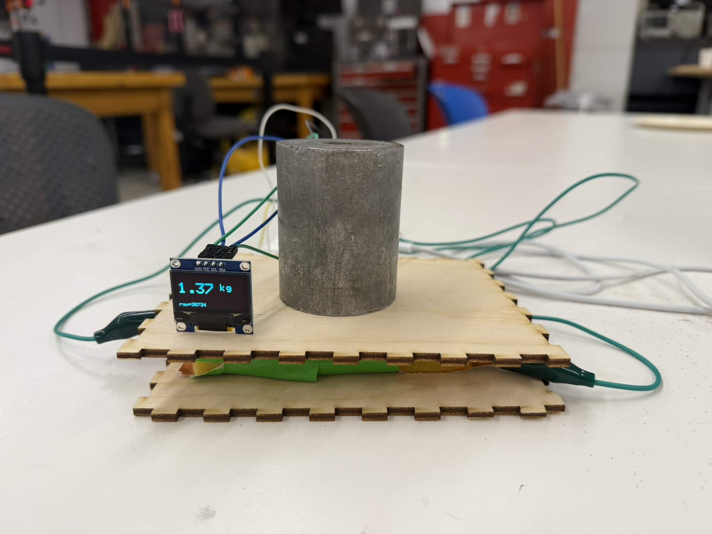
During class, my lab group and I built a capacitive sensor whose capacitance depends on the distance between two plates. We cut a piece of cardboard and used a wooden sliding block with a parallel copper plate taped to it. Using a ruler, we set the plates at a range of measured distances and recorded the raw capacitance signal at each one. The cardboard kept the plates parallel and properly aligned as the block slid. We used the Arduino TX-RX code to calculate the capacitance:
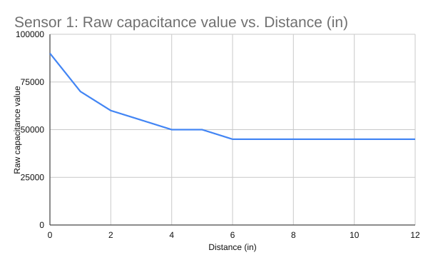
The graph clearly shows that as the distance between the plates increases, the capacitance decreases. This makes sense given the parallel-plate capacitance formula, C = εA/d, in which capacitance is inversely proportional to distance. As both the graph and the formula show, the relationship is not linear.
After this first simple sensor, I wanted to build a second capacitive sensor but this time to measure the weight of an object. My goal was to create a system where an object compresses a squishy material between the plates and from the change of the distance between the plates, we can measure the capacitance.
I started by looking for a suitably squishy material. I dug through the miscellaneous foam bin in the PS70 lab and tried about five different foams, but they were all too rigid. They did not compress well under an object's weight, so they couldn't translate weight into an accurate change in plate distance. In the end, the most responsive option I could find was a sponge from the lab sink (lol), so that became my dielectric.
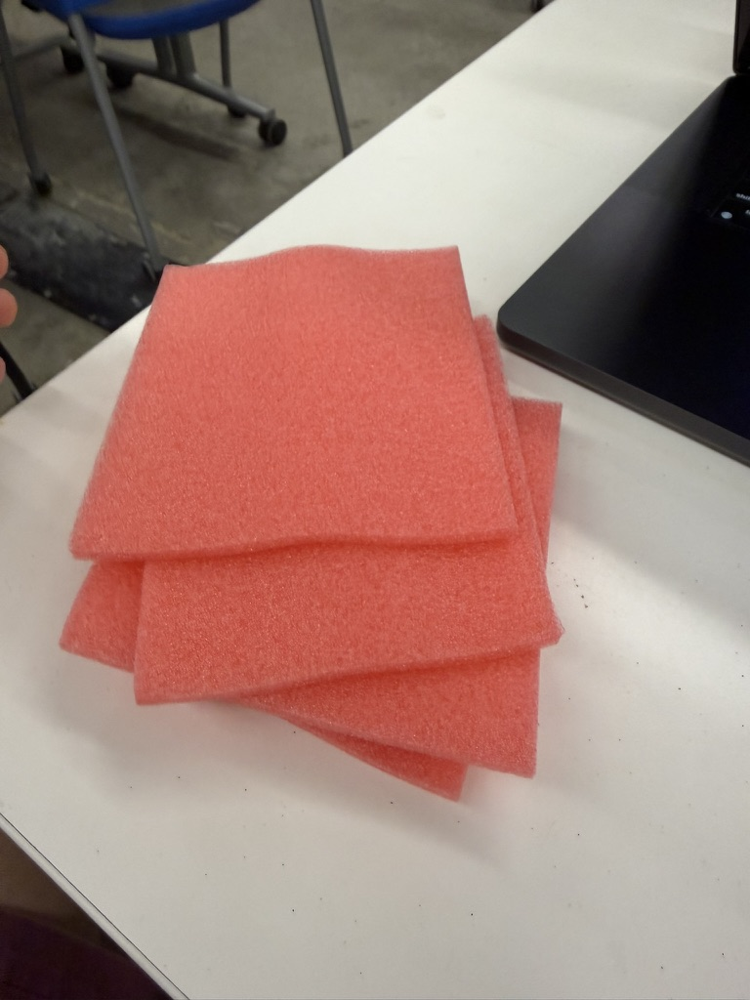
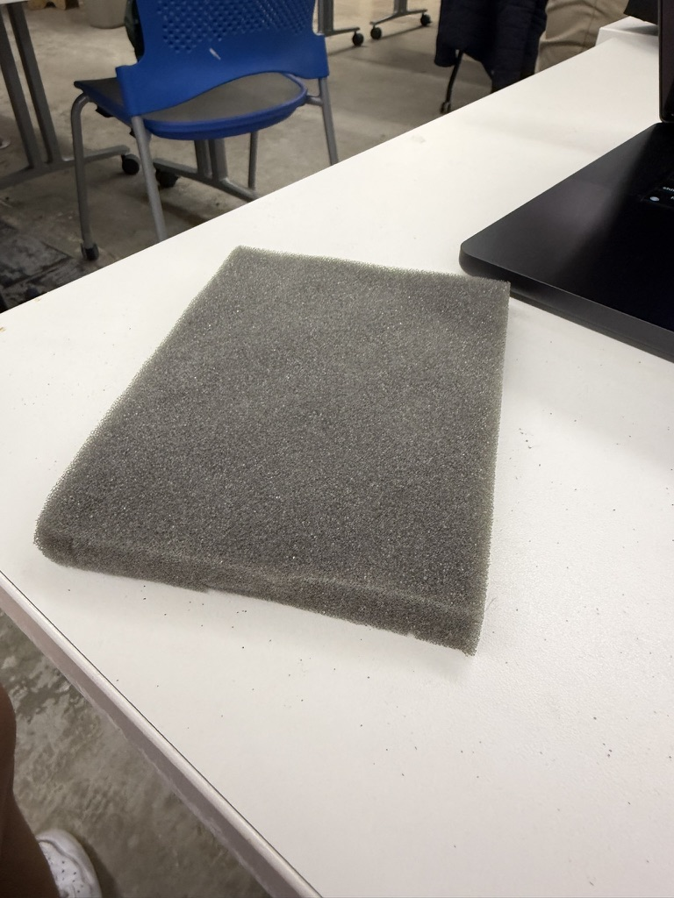
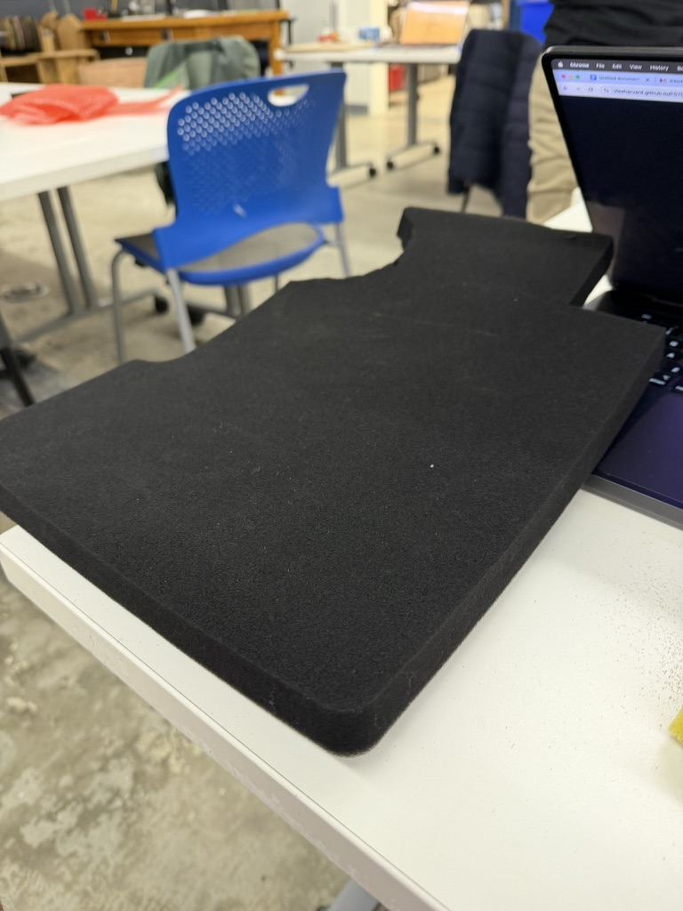
I taped two parallel copper plates to the sides of the sponge. From the plywood scraps next to the laser cutter, I also added a square of plywood on the top and bottom so that the extra surface area would distribute an object's weight evenly across the sponge, for a more accurate measurement. I attached alligator clips to the plates and ran a quick test to confirm the serial monitor picked up the change in plate proximity when I squished the sponge versus when it was at rest.
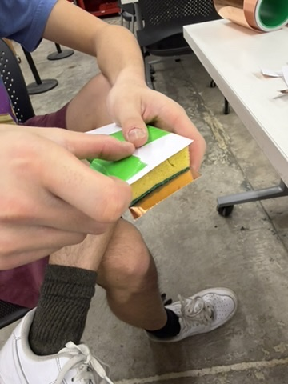
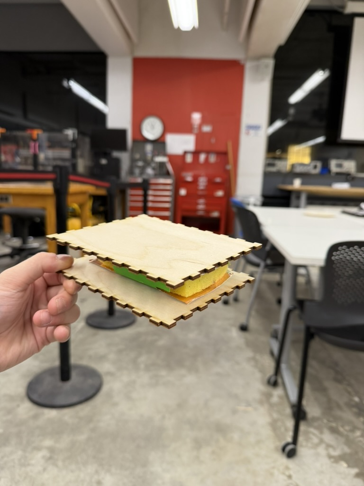
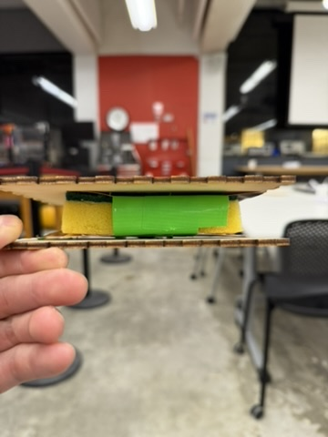
To calibrate the sensor, I gathered scrap pieces of metal of varying weights and used a scale to measure each one's actual weight. I wanted as wide a range of weights as possible. At one point I even had to borrow Aurora's water bottle to add extra weight! I placed each known weight on the sponge sensor and recorded the raw capacitance value it produced, and I also recorded the resting value with no weight on the sensor.
One variable I made sure to control for was the time of compression. This is because after a weight is placed, the sponge keeps slowly compressing, so the capacitance reading drifts upward over time. To keep measurements comparable, I waited 5–10 seconds after placing each weight before recording, so every measurement was taken under equivalent conditions.
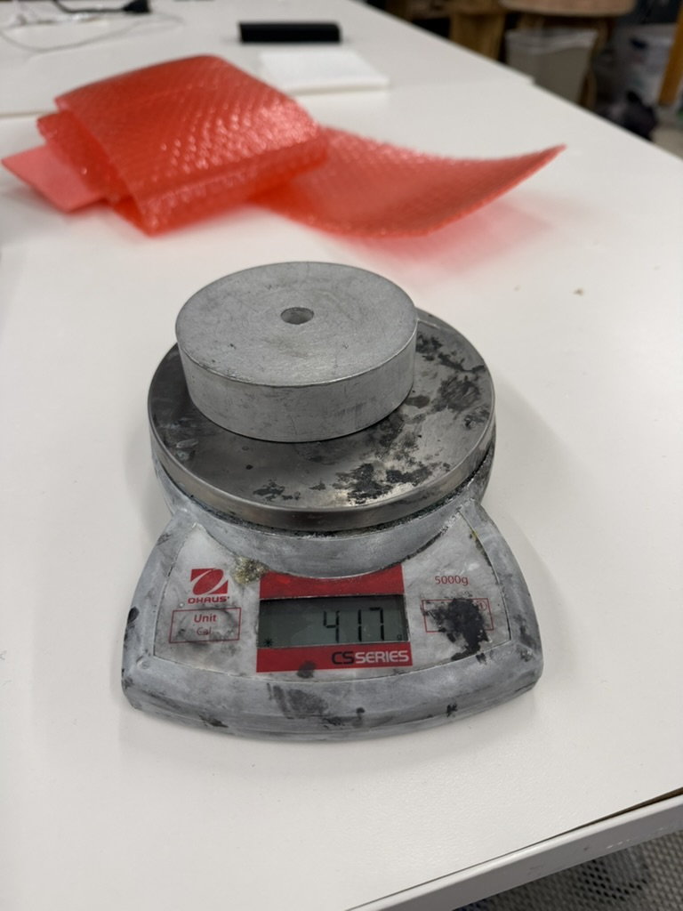
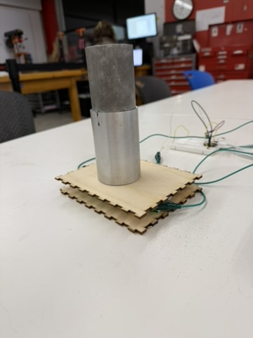
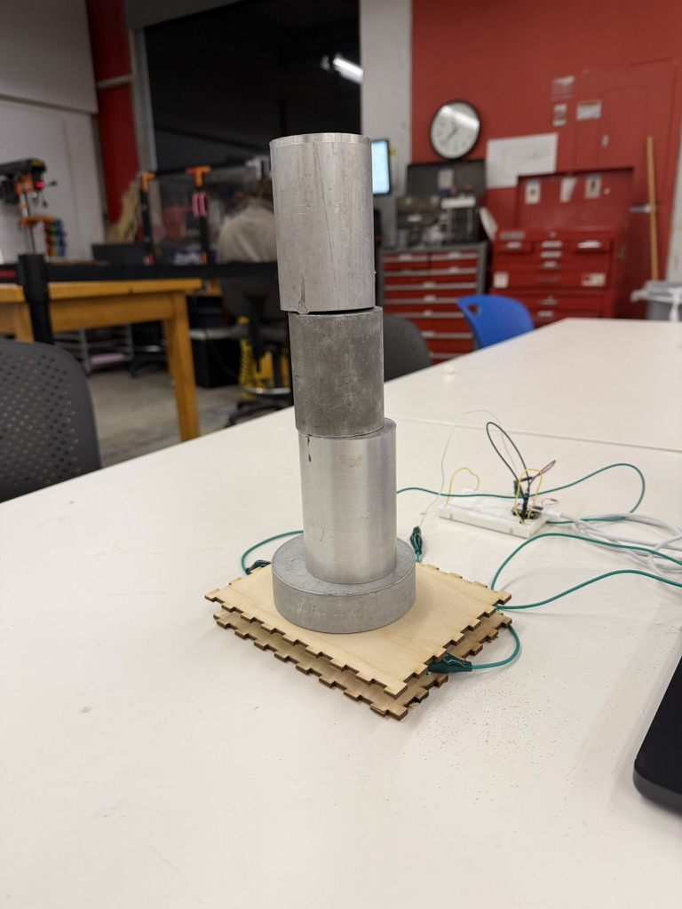
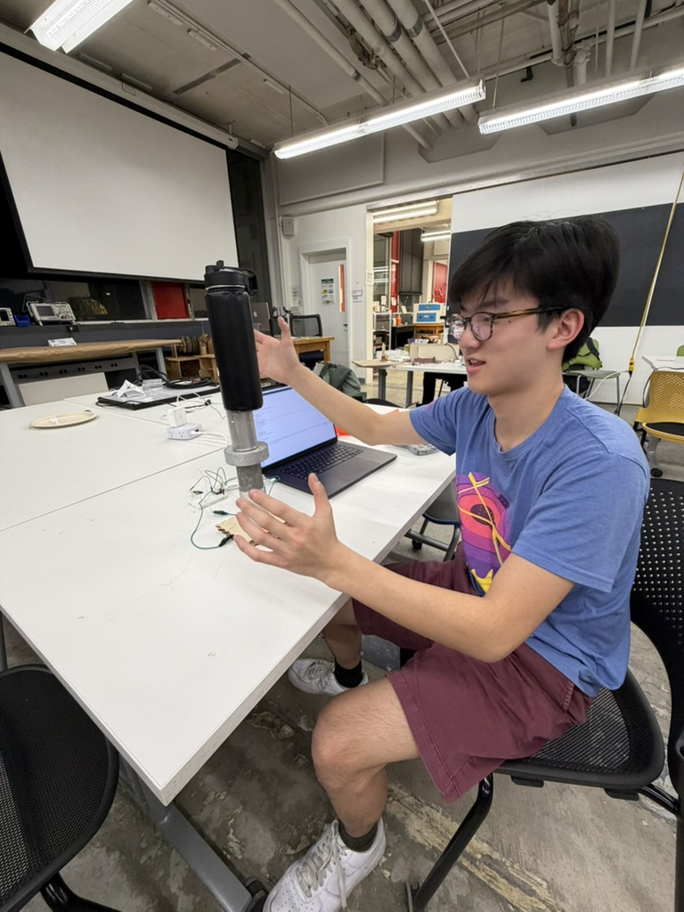
Plotting all the capacitance values against their measured weights, I fit a curve to the data in Desmos. Since the parallel-plate relationship is already known to be nonlinear, I looked for a nonlinear fit and found that a quadratic fit the data best, with an R² of 0.9878. The calibration equation was:
weight (g) = −2486.85477 + 0.0933895x + 1.60704 × 10−7x2
where x is the raw capacitance value from the sensor. The sensor is really measuring the distance between the copper plates: adding weight compresses the sponge, decreases the plate distance, and increases the capacitance reading. Over the specific range of weights I tested, the quadratic looks almost linear, but the Desmos regression captured the full dataset best.
| Raw capacitance value | Measured weight (g) |
|---|---|
| 26515 | 0 |
| 29273 | 416 |
| 33435 | 1014 |
| 42248 | 1536 |
| 47606 | 2394 |
| 57577 | 3434 |
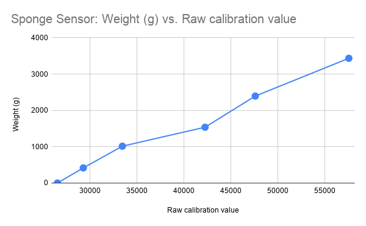
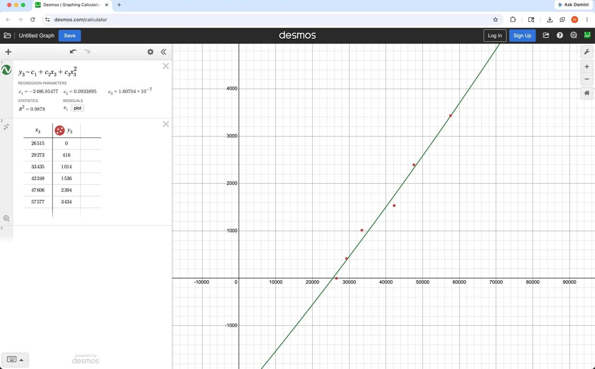
Since I want to use an OLED display in my final project, I used this assignment to experiment with one. I connected an OLED display to the sensor so it could show an object's weight in real time as the sponge compressed. I used this Random Nerd Tutorial to learn which pins to connect:
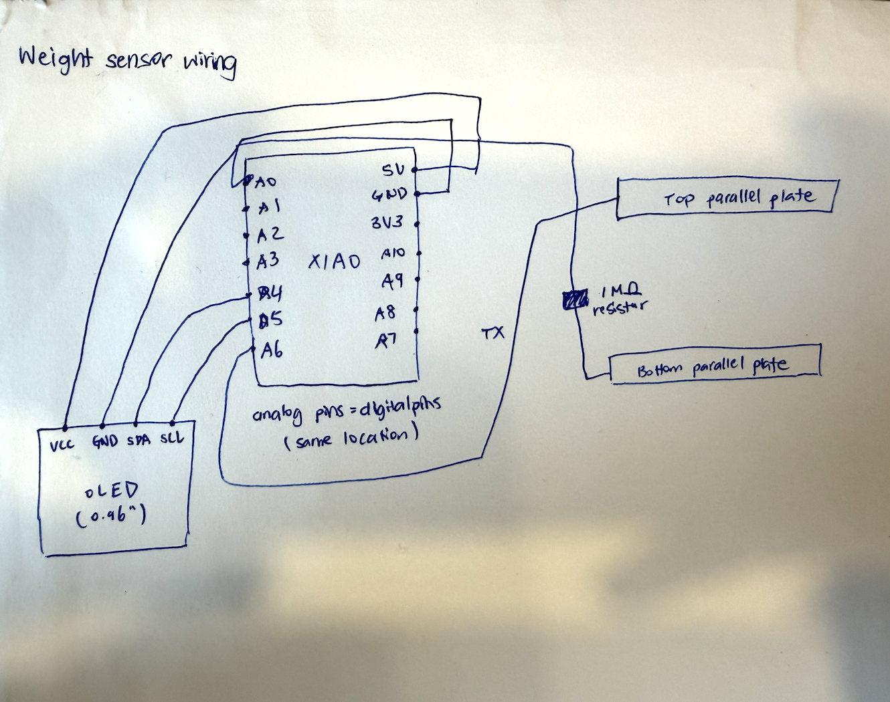
While testing, I was surprised to see that when the sponge was relaxed at its baseline, the sensor sometimes returned nonsensical negative readings. To fix this, I added a lower bound of zero in the code so no negative weights could be displayed.
float toGrams(long raw) {
float r = (float)raw;
float g = C1 + C2 * r + C3 * r * r;
if (g < 0) g = 0;
return g;
}I also noticed that when I first ran the code, the readings fluctuated wildly and very quickly. The values could jump from 0 g to over 1,000 g instantaneously. There was a lot of noise. To make the OLED easier to read, I added smoothing in two layers by making it so that each raw reading was itself the sum of 100 TX/RX samples taken back-to-back (N_SAMPLES), and on top of that the value shown on the display is a rolling average of the last 5 readings (SMOOTH_N).
Here's the complete capacitive sensor sketch, including the OLED display, the smoothing, and the lower bound.
#include <Wire.h>
#include <Adafruit_GFX.h>
#include <Adafruit_SSD1306.h>
const int RX_PIN = D0;
const int TX_PIN = D6;
const int N_SAMPLES = 100;
const float C1 = -2486.85477f;
const float C2 = 0.0933895f;
const float C3 = 1.60704e-7f;
#define OLED_WIDTH 128
#define OLED_HEIGHT 64
#define OLED_ADDR 0x3C
Adafruit_SSD1306 display(OLED_WIDTH, OLED_HEIGHT, &Wire);
const int SMOOTH_N = 5;
long buf[SMOOTH_N] = {0};
int buf_i = 0;
long readCapacitive() {
long sum = 0;
for (int i = 0; i < N_SAMPLES; i++) {
digitalWrite(TX_PIN, HIGH);
int high = analogRead(RX_PIN);
delayMicroseconds(100);
digitalWrite(TX_PIN, LOW);
int low = analogRead(RX_PIN);
sum += (high - low);
}
return sum;
}
long smooth(long raw) {
buf[buf_i] = raw;
buf_i = (buf_i + 1) % SMOOTH_N;
long total = 0;
for (int i = 0; i < SMOOTH_N; i++) total += buf[i];
return total / SMOOTH_N;
}
float toGrams(long raw) {
float r = (float)raw;
float g = C1 + C2 * r + C3 * r * r;
if (g < 0) g = 0;
return g;
}
void setup() {
Serial.begin(115200);
pinMode(TX_PIN, OUTPUT);
Wire.begin();
if (!display.begin(SSD1306_SWITCHCAPVCC, OLED_ADDR)) {
Serial.println("SSD1306 init failed — check wiring and address");
while (true) delay(1000);
}
display.clearDisplay();
display.setTextColor(WHITE);
display.setTextSize(1);
display.setCursor(0, 0);
display.println("Calibrating...");
display.display();
for (int i = 0; i < SMOOTH_N; i++) buf[i] = readCapacitive();
}
void loop() {
long raw = readCapacitive();
long avg = smooth(raw);
float grams = toGrams(avg);
Serial.print(avg);
Serial.print("\t");
Serial.println(grams, 1);
display.clearDisplay();
display.setTextSize(3);
display.setCursor(0, 12);
if (grams < 1000) {
display.print((int)grams);
display.setTextSize(2);
display.print(" g");
} else {
display.print(grams / 1000.0f, 2);
display.setTextSize(2);
display.print(" kg");
}
display.setTextSize(1);
display.setCursor(0, 54);
display.print("raw=");
display.print(avg);
display.display();
delay(50);
}For the second part of the assignment, I decided I wanted to learn how to use an ultrasonic sensor.
Simply put, the ultrasonic sensor I was using—the HC-SR04—measures distance by timing how long an echo takes to return. When the Trig pin is held high for 10 microseconds, the module emits a burst of ultrasonic sound (which is too high-pitched for humans to hear). The sound travels out, bounces off whatever is in front of it, and returns to the module, which calculates how long the round trip took. Since distance equals speed multiplied by time, that timing can be calibrated into a distance measurement. I learned how to wire the HC-SR04 to the XIAO using another Random Nerd Tutorial (I love this site):
One problem I ran into early and which the tutorial helped me solve was that the ultrasonic module needs 5 V to run. I had initially plugged it into the 3.3 V pin, where it worked poorly. Moving it to the 5 V pin fixed the problem immediately.
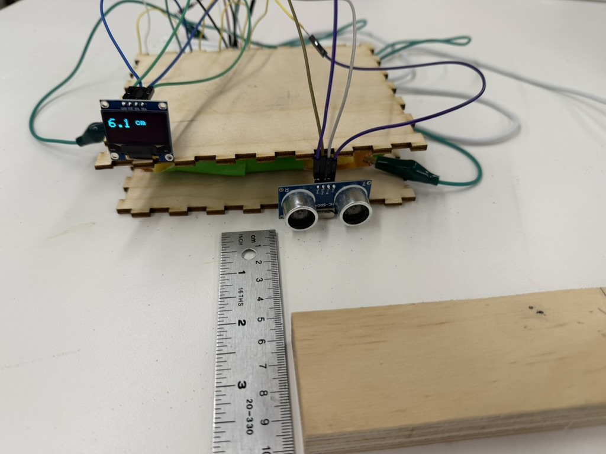
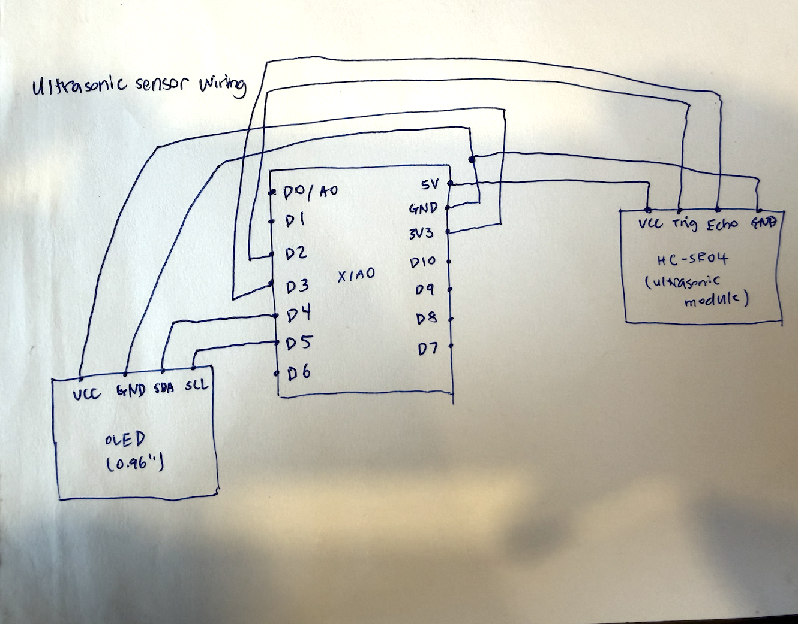
To calibrate the sensor, I laid a ruler perpendicular to it on a flat table and used a wooden sliding block (borrowed from the band saw) as the target. Feeling meticulous, I recorded the raw signal at every centimeter from 1 to 17 cm, plus one more measurement at 20 cm (just to be sure!)
The ultrasonic sensor turned out to be one of the most accurate sensors I've used but only after the object was far enough away from the sensor. The first few data points close to the sensor are clear outliers: at 1–3 cm, the return time is much higher than the linear model would predict. This makes sense because the HC-SR04 has a minimum sensing distance, so very close echoes are not measured as cleanly.
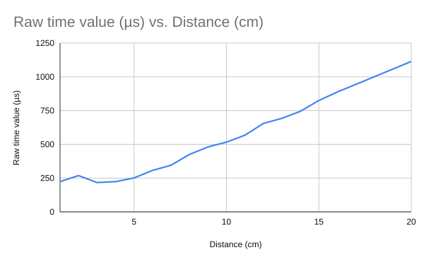
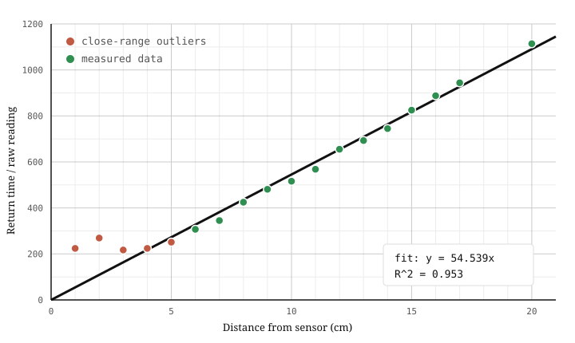
return time = 54.539 × distance
Plotting the points in Desmos, I found the relationship between the sensor's return time and distance was almost perfectly linear and essentially a straight line through the origin, with an R² value of 0.953. In the equation above, distance is in centimeters. This makes sense since distance equals speed times time. Since the sensor is really measuring time for the echo to return, the sensor's reading should be linearly related to the distance from the wooden block.
| Distance (cm) | Return time / raw reading |
|---|---|
| 1 | 224 |
| 2 | 269 |
| 3 | 217 |
| 4 | 224 |
| 5 | 251 |
| 6 | 307 |
| 7 | 345 |
| 8 | 425 |
| 9 | 481 |
| 10 | 516 |
| 11 | 568 |
| 12 | 655 |
| 13 | 693 |
| 14 | 745 |
| 15 | 825 |
| 16 | 888 |
| 17 | 944 |
| 20 | 1114 |
I calibrated the sensor even though, in principle, I could have calculated the theoretical relationship in advance from known physics. I did it anyway because the real speed of sound isn't exactly the textbook 343 m/s. Oftentimes, it varies with temperature, humidity, and air pressure and the module itself can have internal timing delays. I think calibrating against real measurements for a specific setup is always good practice.
Finally, I connected the OLED display to the ultrasonic sensor so I could watch the distance measurements update in real time. I was really impressed at how small the error was. The mean absolute error between the sensor's predicted distances and the real distances was just 0.433 cm across all the points and that's even including the noisy close-range measurements from 1–5 cm.
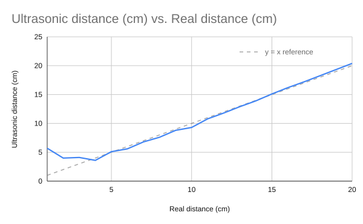
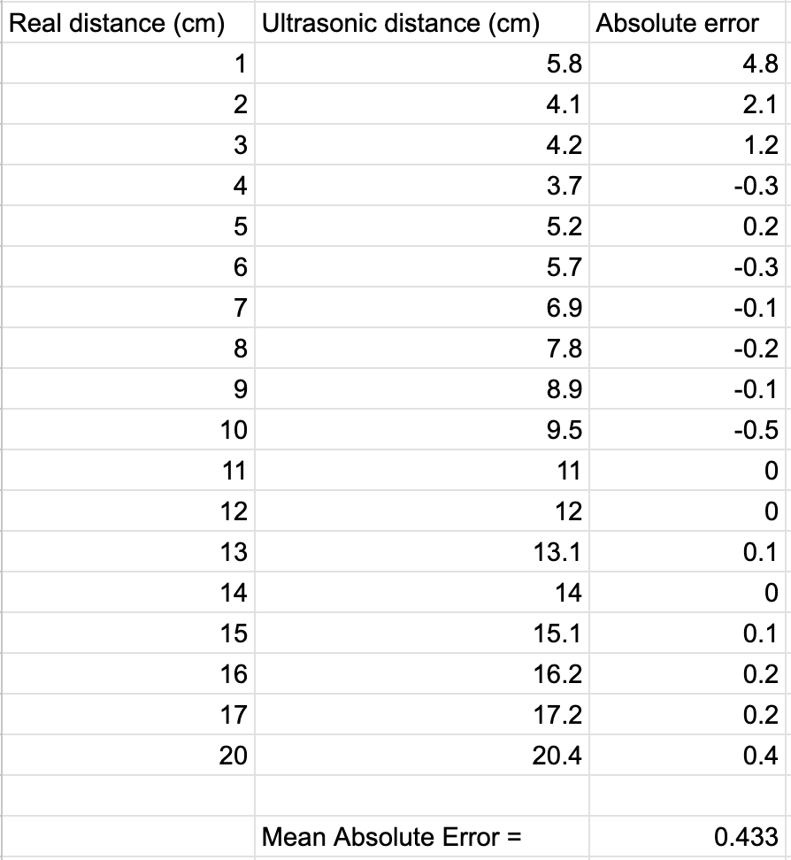
For CNC week, I'm planning to mill a world map out of foam and fill it in with plaster. I found an image of a world map online and converted it into an SVG file to prepare for milling.